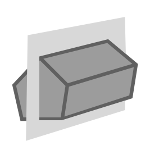

SectionPlanesPlugin
Centers the SectionPlane in the view
Press [c] to position the SectionPlane in the center of the view.
Stats
Loading JavaScript modules...
Components used
Viewer
XKTLoaderPlugin
SectionPlanesPlugin
Resources
Model source